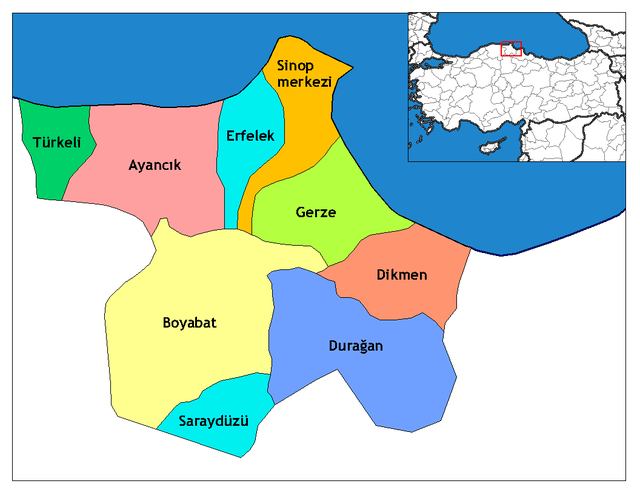

Sinop, Türkiye'nin Karadeniz Bölgesi'nin batı karadeniz bölümünde bulunan Sinop ilinin merkezi olan şehirdir. Karadeniz kıyısında, Boztepe Burnu'nun karayla birleşme noktasında yer alır. Sinop Kalesi, tarihi ve turizm açısından kentin en ilginç yeridir. Türkiye'nin kuzeyde en uç noktası olan İnceburun Sinop ilindedir. Sinop ilk çağda "Paflagonya" adı verilen bölge içindedir. Anadolu'nun kuzey sahilleri ile Kırım yarımadası arasında deniz ticaretinde önemli bir rol oynamıştır. Önemli bir doğal liman konumundadır. Aynı zamanda Sinop yaklaşık 55 bin kişi olan şehir merkezi nüfusuyla Türkiye'nin en küçük illerinden biridir.

Şehir
Sinop
Nüfus
229.716 (2023)
Plaka Kodu
57
Posta Kodları
57000, 57002, 57010
İklim
Karadeniz iklimi ile İç Anadolu iklimi arasında geçiş bölgesi iklimi